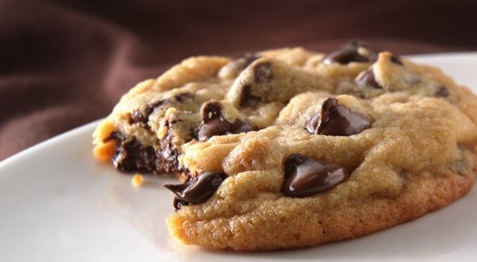

Ingredientes
- 2 1/4 xícaras (280g) de farinha de trigo
- 1/2 colher de chá de bicarbonato de sódio
- 1 xícara (220g) de manteiga sem sal, derretida e resfriada
- 1 xícara (200g) de açúcar mascavo
- 1/2 xícara (100g) de açúcar refinado
- 1 colher de chá de extrato de baunilha
- 1 ovo grande
- 1 gema de ovo
- 2 xícaras (340g) de gotas de chocolate
- 1 pitada de sal
Passos
- Preaqueça o forno a 180°C e forre uma assadeira com papel manteiga.
- Em uma tigela, misture a farinha, o bicarbonato de sódio e o sal. Reserve.
- Em outra tigela, bata a manteiga derretida com o açúcar mascavo e o açúcar refinado até obter uma mistura homogênea.
- Adicione o ovo, a gema e o extrato de baunilha à mistura de manteiga e açúcar. Bata bem.
- Incorpore gradualmente os ingredientes secos, misturando apenas até combinar.
- Adicione as gotas de chocolate e misture levemente.
- Forme bolas com a massa usando uma colher ou as mãos e coloque na assadeira, deixando espaço entre os cookies.
- Asse por 10-12 minutos ou até as bordas ficarem levemente douradas.
- Retire do forno e deixe os cookies esfriarem na assadeira por 5 minutos antes de transferi-los para uma grade para esfriar completamente.